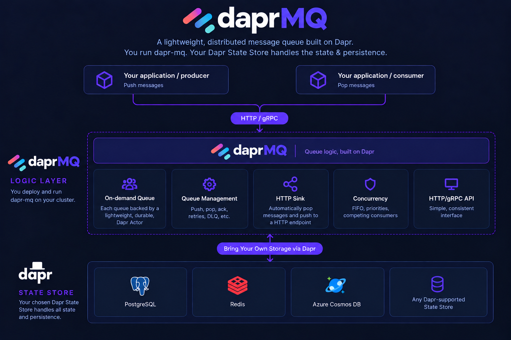
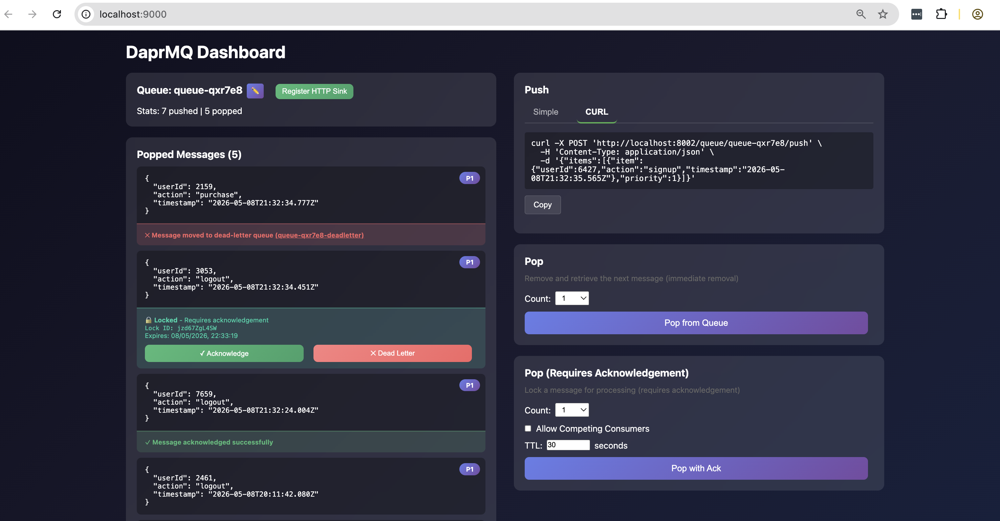

DaprMQ Runs anywhere Dapr runs: any Kubernetes cluster, VM, or local Docker Compose setup with a Dapr 1.18+ installation. Two API endpoints, no noisy neighbours, priority lanes, and dead-lettering built in.
Two endpoints to get started. Every other feature is optional, and layers on cleanly when you need it.
Push and Pop — that's the whole API surface. Queues are created on-demand, no provisioning step.
Call daprMQ over simple HTTP or gRPC interfaces
Strict first-in-first-out ordering per queue — no reordering, no surprises, no partitions to reason about.
Route urgent messages ahead of normal ones. Unbounded priority levels, 0 = highest.
Optional at-least-once delivery — unacknowledged messages become available again after a timeout.
Atomic operations for pushing and popping many items at once, for best throughput.
Run many concurrent Pop operations in a traditional competing-consumer pattern.
Move poison messages to a dedicated dead-letter queue without blocking the main queue.
Forward messages to any webhook automatically — no custom control loop required.
Queues split into fixed-size segments so memory and network usage stay bounded.
Push oversized payloads to external object storage (S3, Azure Blob Storage) and pop lightweight claim tokens — queue state never carries the bytes.
Backed by any Dapr state store — PostgreSQL, Redis, Cosmos DB, and more.
Ship to Kubernetes with the bundled Helm chart — gateway and worker deployments with autoscaling out of the box.
daprMQ trades raw streaming throughput for cheap, isolated, per-tenant queues with priority and dead-lettering built in — no bolt-on middleware required.
| Dimension | daprMQ | Kafka |
|---|---|---|
| Ordering | Per queue | Per partition |
| Priority | Built-in | No native support |
| Dead-lettering | Built-in | Application managed |
| Hosting model | Just Dapr + your state store | Dedicated broker cluster to run & patch |
| Portability | Any Dapr-supported state store | Self-hosted or vendor-managed Kafka |
| Dimension | daprMQ | RabbitMQ |
|---|---|---|
| Ordering | Per-queue FIFO | Per-queue FIFO |
| Priority | Native, unbounded priority lanes | Plugin-based priority queues |
| Dead-lettering | Built-in | Manual exchange/queue wiring |
| Hosting model | Just Dapr + your state store | Dedicated broker cluster to run & patch |
| Portability | Any Dapr-supported state store | Self-hosted or vendor-managed RabbitMQ |
| Dimension | daprMQ | AWS SQS/SNS |
|---|---|---|
| Ordering | Bound only by your state store | FIFO capped per message-group without batching |
| Priority | Built-in | No native support |
| Dead-lettering | Built-in | Separate queue + redrive policy |
| Hosting model | Just Dapr + your state store | Fully managed AWS service |
| Portability | Any Dapr-supported state store | Locked to AWS |
| Dimension | daprMQ | Azure Service Bus |
|---|---|---|
| Ordering | FIFO by default, per queue | Requires sessions for guaranteed FIFO |
| Priority | Built-in | No native support |
| Dead-lettering | Built-in | Built-in |
| Hosting model | Just Dapr + your state store | Namespace + tier pricing, fully managed |
| Portability | Any Dapr-supported state store | Azure only |
Want the deep dive on partitions and the noisy-neighbour problem? Read the full comparison on GitHub.
Push a message with a priority. Pop the next one. No SDKs, no schemas, no setup.
curl -X POST http://localhost:8002/queue/my-queue/push \
-H "Content-Type: application/json" \
-d '{ "items": [{ "item": { "task": "first" }, "priority": 1 }] }'
curl -X POST "http://localhost:8002/queue/my-queue/pop"
# {
# "items": [
# { "item": { "task": "first" }, "priority": 1 }
# ]
# }
Each queue is a Dapr Actor — giving it horizontal scaling, single-threaded consistency, and persistence for free.

Your app sends a message to a named queue.
A per-queue actor handles the write, single-threaded.
Persisted to Postgres, Redis, Cosmos DB, or any Dapr state store.
Consume directly, or let the built-in HTTP Sink deliver it for you.
A bundled web dashboard for exploring queues, priorities, locks, and dead-letters as you build.

The bundled Dashboard UI — available at http://localhost:9000 after
docker-compose up.
Elastic License 2.0 (ELv2). Use daprMQ in development, testing, and production — internally, without restriction. Modify it for internal purposes.
Required if you offer daprMQ as a hosted/managed service, sell it as part of a paid product, embed it as a core feature, or build a competing messaging solution.
"If you are making money directly from daprMQ or offering it to others, you likely need a commercial license."